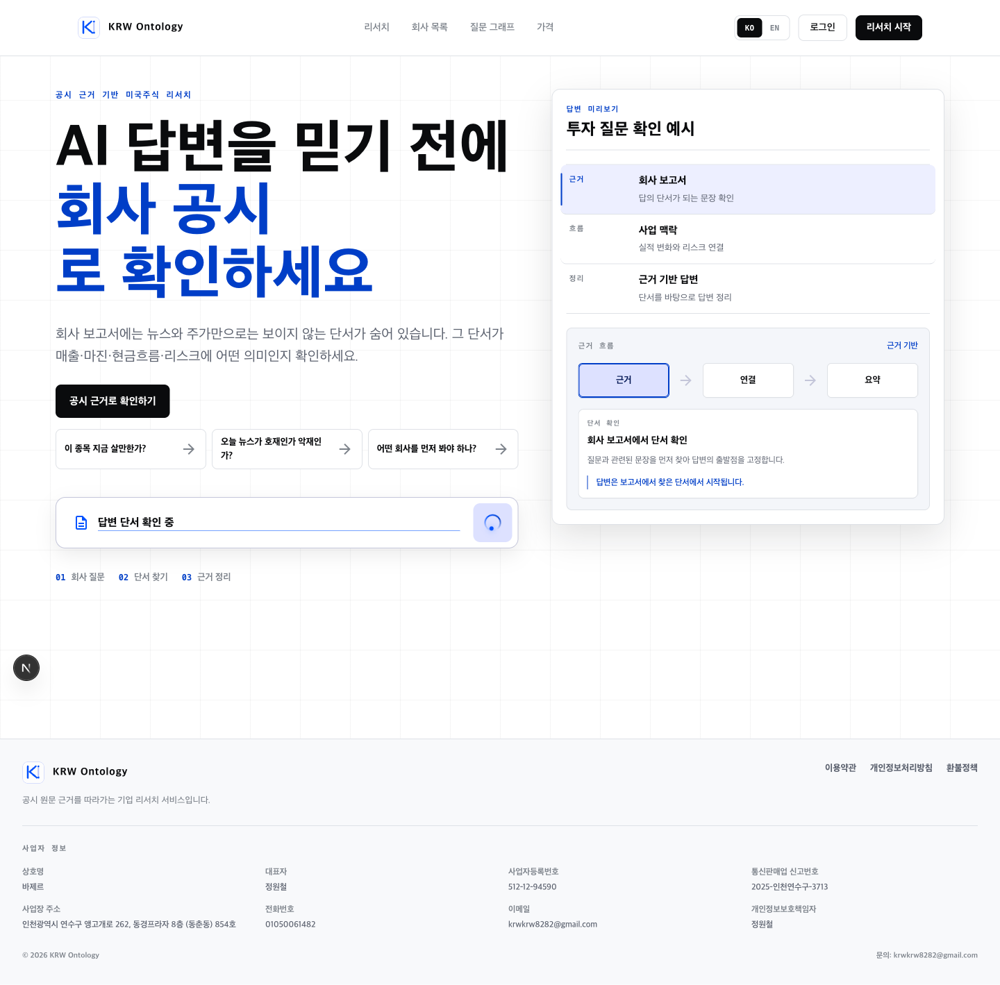
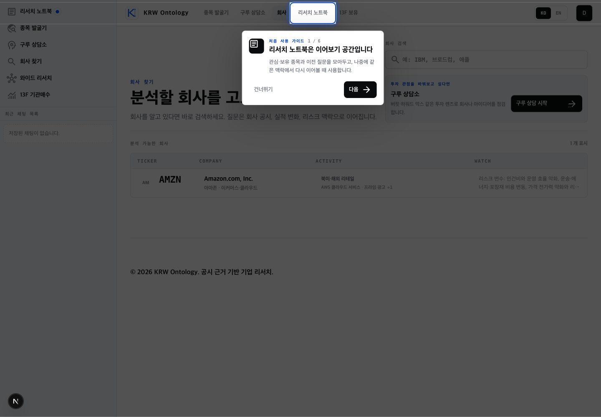
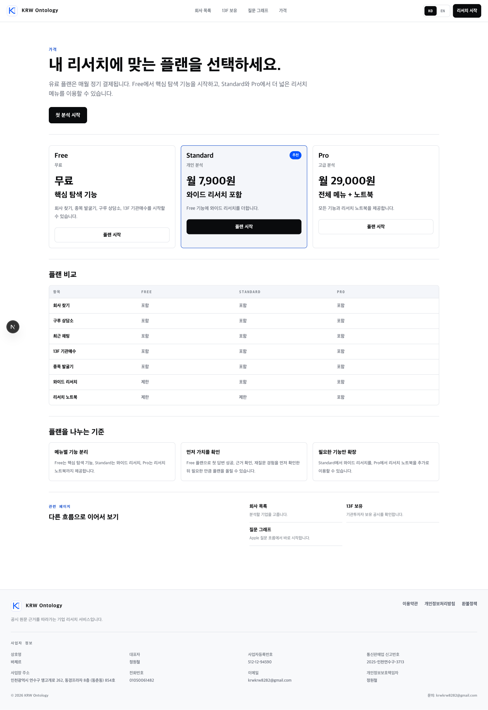
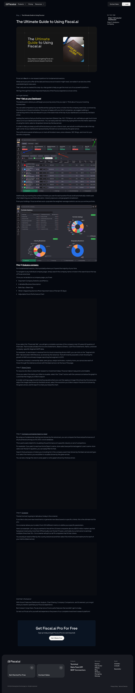
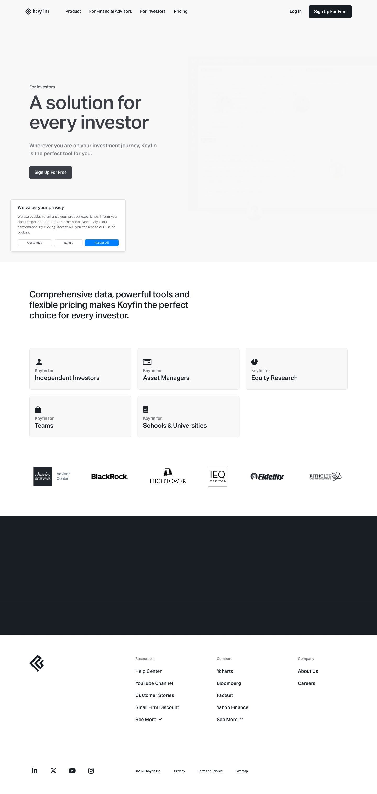
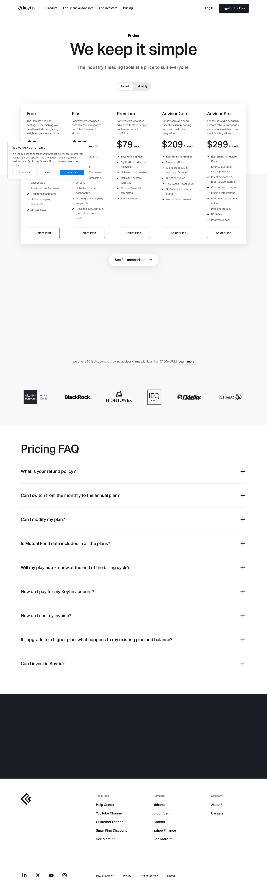
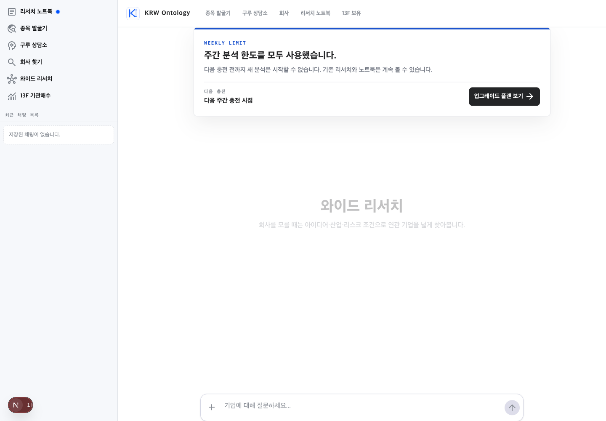
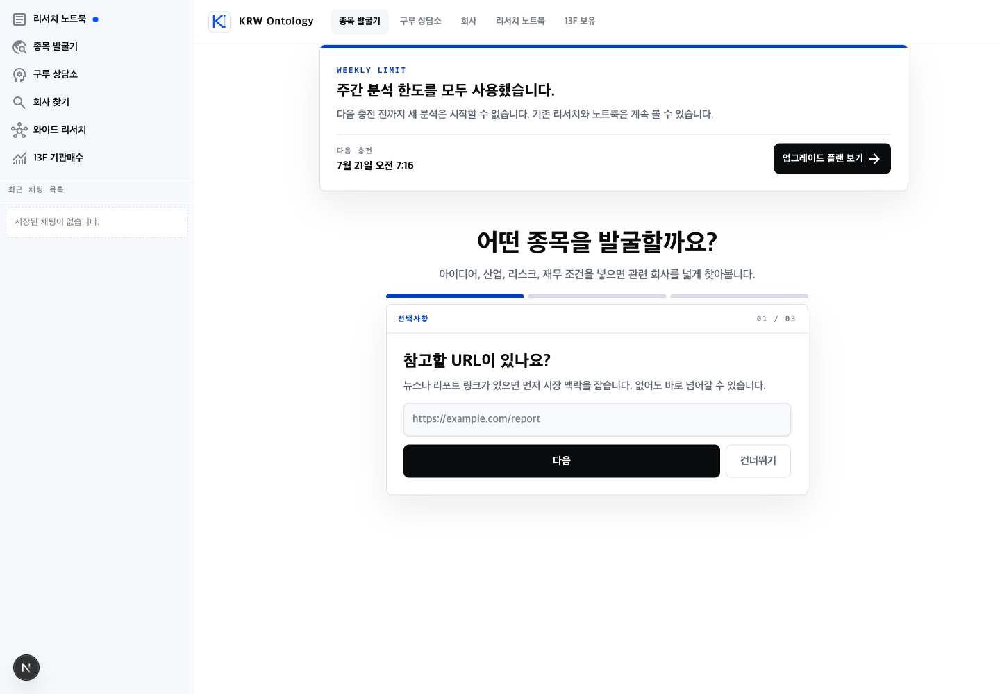
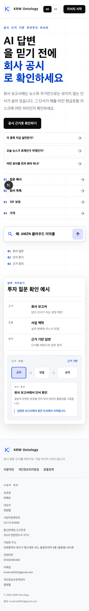

개인투자자가 어려워할 지점
현재 상태



개선 아이디어
1. 메뉴 설명보다 “첫 근거 답변”으로 시작하기 최우선
6단계 투어를 기본 진입 경험으로 쓰지 말고, 사용자가 가진 정보에 따라 하나의 작업만 추천한다. “회사 이름을 안다 / 업종·아이디어만 있다 / 이미 가진 투자 아이디어를 검증하고 싶다”의 세 갈래면 충분하다. 선택 뒤에는 해당 메뉴 설명 없이 샘플 질문과 회사 선택으로 바로 이어지게 한다.

┌──────────────────────────────────────┐ │ 오늘 무엇을 확인하고 싶나요? │ │ │ │ [회사 이름을 알아요] → 회사 검색 │ │ [아이디어만 있어요] → 종목 후보 찾기│ │ [내 판단을 점검해요] → 투자 가정 검증│ │ │ │ 최근 본 회사가 있다면 바로 이어보기 │ └──────────────────────────────────────┘
2. 내부 기능명보다 투자자의 과업을 앞에 놓기
“종목 발굴기, 구루 상담소, 와이드 리서치, 질문 그래프, 13F 보유”는 익숙해지면 구분되지만 첫 방문자에게는 차이가 즉시 보이지 않는다. 내비게이션의 1차 라벨은 과업으로 바꾸고 제품명은 보조 라벨로 내리는 편이 낫다.
| 현재 | 첫 사용자용 표현 | 사용자가 기대하는 결과 |
|---|---|---|
| 회사 찾기 | 회사 분석 | 특정 회사의 실적·리스크·공시 근거 |
| 종목 발굴기 | 조건으로 종목 찾기 | 아이디어에 맞는 후보 목록과 비교축 |
| 구루 상담소 | 투자 가정 점검 | 좋은 점, 의심할 점, 판단이 바뀌는 조건 |
| 와이드 리서치 | 산업·이슈 비교 | 여러 회사를 한 번에 비교 |
| 13F 기관매수 | 기관 보유 변화 | 누가 사고팔았는지와 후속 조사 후보 |

회사 분석 특정 회사의 공시·실적·리스크를 확인합니다. 조건으로 종목 찾기 산업·성장률·리스크 조건으로 후보를 좁힙니다.
3. 가격표에 실제 사용량과 “보통 몇 번”을 공개하기
현재는 Free/Standard/Pro가 어떤 메뉴를 여는지만 보여준다. 그러나 실제 제품은 주간 분석 크레딧으로 제한되고, 한도 도달 시 새 분석이 완전히 막힌다. 결제 전 사용자는 월 7,900원으로 자신의 질문 패턴을 얼마나 소화할 수 있는지 알 수 없다.

Standard · 월 7,900원 주 2,000 분석 크레딧 최근 사용 기준 단일회사 질문 약 ○~○회 산업 전체 비교는 질문 1회당 더 많이 사용될 수 있음 [무료로 첫 답변 확인] [사용량 계산 보기]
4. 한도 도달 화면을 막다른 길이 아니라 계획 화면으로 만들기
현재 한도 카드에는 다음 충전과 업그레이드 버튼이 있지만, 사용자가 무엇 때문에 소진됐는지, 어느 플랜이면 같은 패턴을 감당할지, 돈을 쓰지 않고 할 수 있는 다음 행동이 무엇인지 부족하다. 특히 첫 방문에 한도 상태를 만나면 제품을 한 번도 체험하지 못하고 이탈할 수 있다.
이번 주 분석 사용량 2,000 / 2,000 가장 많이 사용한 작업 산업 비교 2회 지금 할 수 있는 일 • 기존 답변 다시 보기 • 저장한 회사의 공시 원문 열기 • 다음 질문을 초안으로 저장하기 같은 패턴이라면 Pro가 더 적합할 수 있어요. [내 사용량으로 플랜 비교] [7월 21일 알림 받기]
5. “신뢰” 약속에 커버리지·최신성·한계를 붙이기
홈은 공시 근거를 강하게 약속하지만 사용자가 분석 전 확인해야 할 범위는 덜 보인다. 지원 거래소/기업 수, 어떤 공시를 쓰는지, 마지막 갱신 시각, AI가 놓칠 수 있는 것, 투자 조언이 아니라는 경계를 검색 결과와 답변 상단에 짧게 노출하면 오히려 신뢰가 높아진다.
AMZN · 자료 상태 ✓ 최신 10-K: FY2025 · 2026-02-06 수집 ✓ 답변 문장마다 원문 위치 제공 ! 공시는 미래 수익률을 보장하지 않으며 누락·해석 오류 가능 [사용 자료 보기] [정정 요청]
잘하고 있는 점
차별점이 한 문장에 보인다
“AI 답변을 믿기 전에 회사 공시로 확인”은 일반 AI 채팅과 다른 이유를 선명하게 전달한다.
답변 생성 과정을 시각화한다
근거 → 연결 → 요약의 흐름은 결과의 출처와 사고 과정을 이해시키는 데 도움이 된다.
샘플 질문이 투자자 언어에 가깝다
“지금 살만한가?”, “호재인가 악재인가?”에서 출발해 공시 기반 질문으로 연결하는 방향이 좋다.
모바일 가로 넘침이 없다
390px 뷰포트에서 수평 스크롤 없이 주요 화면이 배치되며, 데스크톱 정보 구조를 무리하게 그대로 유지하지 않는다.
우선순위
| 순서 | 변경 | 예상 효과 | 구현 난이도 |
|---|---|---|---|
| 1 | 6단계 투어를 의도 선택형 첫 작업으로 교체 | 첫 답변 성공률, 메뉴 선택률 | 중간 |
| 2 | 가격과 한도에 실제 사용량·예상 범위 표시 | 결제 신뢰, 업그레이드 이해 | 낮음~중간 |
| 3 | 메뉴 라벨을 투자 과업 중심으로 수정 | 탐색 시간, 잘못된 진입 감소 | 낮음 |
| 4 | 한도 화면에 사용 내역과 무료 대안 추가 | 이탈 감소, 업그레이드 품질 | 중간 |
| 5 | 커버리지·최신성·한계 표시 | 장기 신뢰와 답변 검증 | 중간 |
모든 참고 화면



